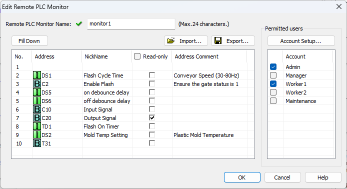

|
|
|
Topic: CL323 |
Add/Edit Remote PLC Monitor |
|
|
The Add/Edit Remote PLC Monitor Setup dialog is used to build Monitors appropriate for the Remote PLC app. These Monitors differ from typical CLICK programming Data Views. The Remote PLC Monitors are security enabled, and are limited to 10 fields in order to maintain high performance over wireless or Bluetooth transmission.

Remote PLC Monitor Name: Enter a name for the Monitor. The name can contain up to 24 characters. The Monitor name will be used as the file name if the Monitor definition is exported to a .csv file.
|
|
Note: The following special characters are not allowed in the Monitor name: " * / : ; < = > ? @ [ \ ] ^ ` { | } ~ |
|
Network Address Configuration: First click in an Address field to select the address number you want to assign. Click the "ellipsis" button to open the address picker. Use the address picker to select up to 10 registers to include in this Monitor. Mark any addresses that should not be editable as read-only. This is a good time to ensure your Nicknames and Comments are meaningful for the users who will have access to the Monitor through the Remote PLC App.
|
|
Note: Applicable Data Types: |
|
Export: Save the definition of this Monitor in a .csv file. The exported file contains the list of addresses and the read-only status of each. By default, the file is saved in the project folder with the Monitor name as its file name. This file can be imported into a project to recreate this Monitor. The .csv file will also provide the format needed to externally create Monitor definitions to be imported into a project.
Import: Load a set of addresses from a saved .csv file. These can be later imported into a different Monitor to simplify the configuration process. Below is an example import file which will load two records into the monitor in rows 1 and 2. When import is selected, you'll have an opportunity to select how these records will be merged with the existing records:
No,Address,Read-only
1,DS1,FALSE
2,C2,TRUE
Permitted Users: The list of users permitted to access the current Monitor can be quickly set from this dialog. For more control over each user's Remote PLC experience, see the Remote PLC User Setup dialog, accessible from the Account Setup button.
Remote PLC Setup
Remote PLC User Setup
Remote PLC Monitor Setup
Remote PLC App